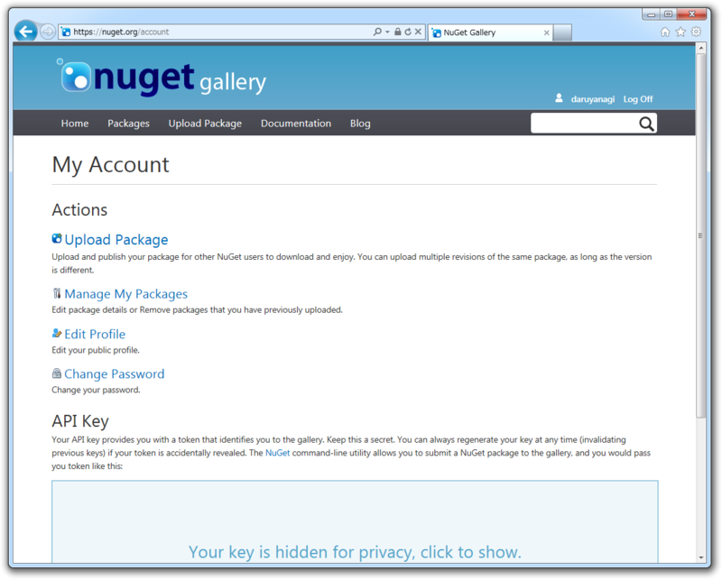
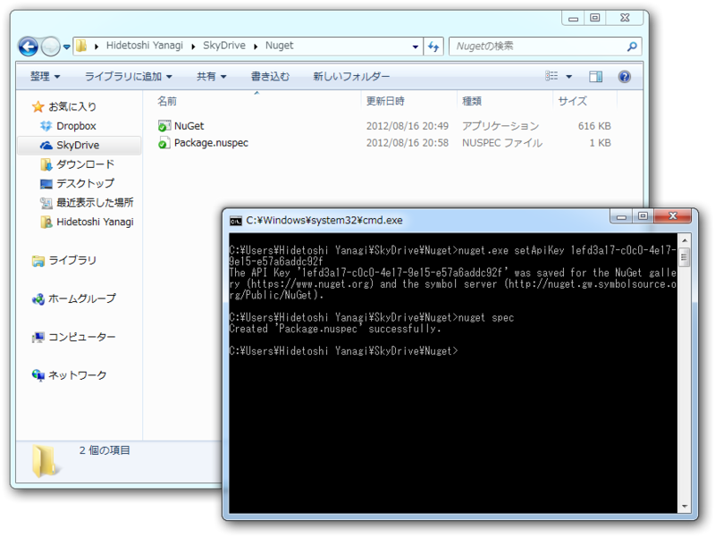
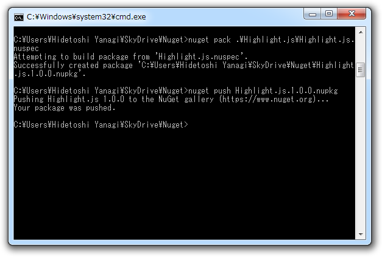
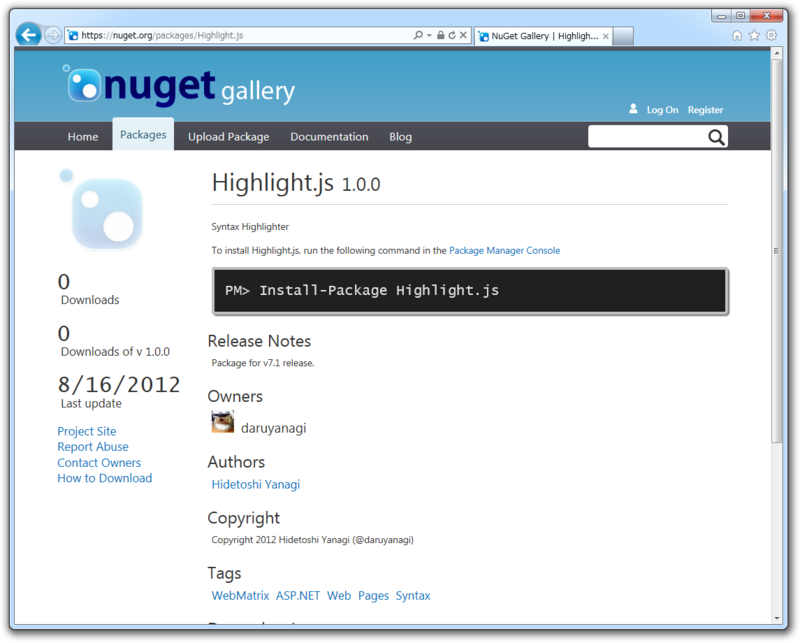
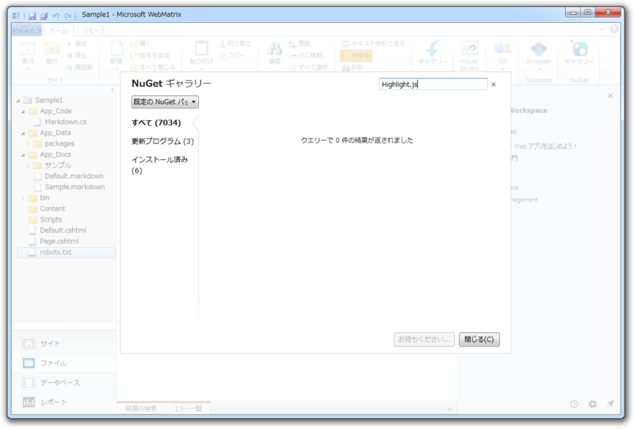
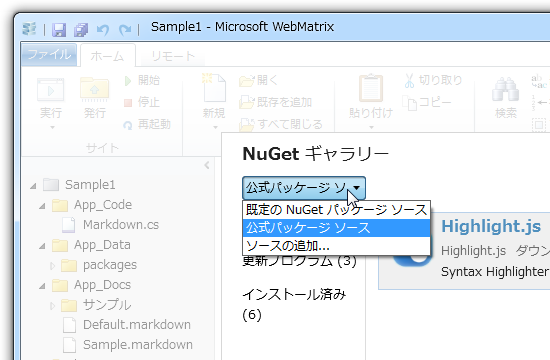
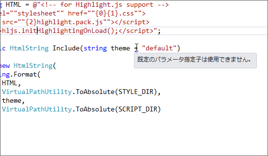
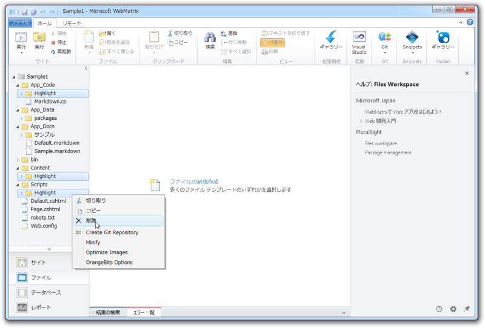
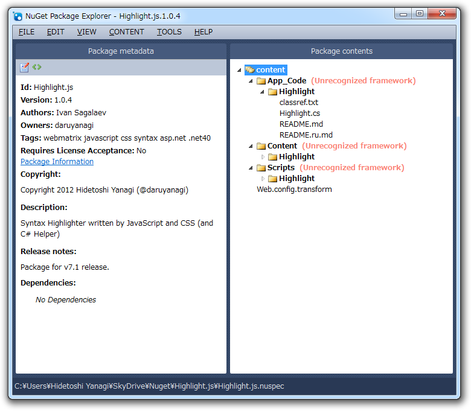

Highlight.js を NuGet パッケージにしてみました
公開日：
WebMatrix で Markdown を少しだけ拡張してみる - だるろぐ と App_Code でサブフォルダーを利用する - だるろぐ で扱った Highlight.js を NuGet パッケージにしてみました。
最初は Highlight.js の NuGet パッケージは存在しないと思い込んでいたのですが、ただ検索のやり方が悪かったようで、「Highlight」というパッケージがあったり、似たような機能を実現できそうな「ColorCode」というパッケージもみつけたのですが、見なかったふりをします。 nuget.org はまだちょっと検索機能がイケてないような気がしますね（責任転嫁）。
準備
nuget.org のアカウントを作成
NuGet Gallery | Home でアカウントを作成してください。だいぶ前にやったのでやり方は忘れましたが、難しくはないはずです。

アカウントページで API キーが取得できるので、それをローカル環境に登録します。
nuget.exe setApiKey ********-****-****-****-************ nuget.exe push MyPackage.1.0.nupkg
NuGet.exe を入手（http://nuget.codeplex.com/releases NuGet.exe Command Line）して、1行目を実行すればOKです*1。
パッケージに含めるファイルを用意
今回パッケージに含めるファイルは以下のとおりです。
Highlight.js/Highlight.js.nuspec <– あとで作りましょう！
content/ （ ~/ 以下に展開されます） App_Code/ Highlight/ Highlight.cs Lisence Files Content/ Highlight/ Theme Skins Scripts/ Highlight/ hilight.pack.js web.config.transform <– あとで説明します！
tools/ （セットアップなどに利用するスクリプトなどを含めます）
lib/ （必要な参照アセンブリを格納しておきます）
今回は tools と lib が空ですけど、それなりに大規模なパッケージを作るときは必要になるのだと思います。ほかにも .NET やら Silverlight やら、ターゲットによってフォルダー構成を変えなきゃダメみたいだけれど、今回はまぁ、いいかな。その代わり、 NuSpec （後述）のタグに「asp.net」と対象ターゲットを書いておくことにします。
web.config.transform の内容はこんな感じです。 App_Code のサブフォルダーに格納した Highlight.cs のコンパイルを有効にするための設定が記述されています。
<?xml version="1.0"?> <configuration> <system.web> <compilation debug="false"> <codeSubDirectories> <add directoryName="Highlight"/> </codeSubDirectories> </compilation> </system.web> </configuration>
.transform という拡張子をつけて content フォルダーに置いておくだけで、勝手にインストール先の Web アプリの web.config とマージしてくれるみたいですね。あらまー、簡単！
NuGet パッケージ（NuPack）の作成
では、 NuGet のパッケージを作成します。手順は NuSpec ファイルに名前やバージョンなどのメタデータを記述して、 NuPack へ Pack（パッケージング）し、 nuget.org へ push （公開）するといった感じ。
NuSpec の作成

nuget.exe spec
で雛形を出力します。内容はこんな感じになっているので、てけとーに編集します。
<?xml version="1.0"?> <package > <metadata> <id>Package</id> <version>1.0.0</version> <authors>Hidetoshi Yanagi</authors> <owners>Hidetoshi Yanagi</owners> <licenseUrl>http://LICENSE_URL_HERE_OR_DELETE_THIS_LINE</licenseUrl> <projectUrl>http://PROJECT_URL_HERE_OR_DELETE_THIS_LINE</projectUrl> <iconUrl>http://ICON_URL_HERE_OR_DELETE_THIS_LINE</iconUrl> <requireLicenseAcceptance>false</requireLicenseAcceptance> <description>Package description</description> <releaseNotes>Summary of changes made in this release of the package.</releaseNotes> <copyright>Copyright 2012</copyright> <tags>Tag1 Tag2</tags> <dependencies> <dependency id="SampleDependency" version="1.0" /> </dependencies> </metadata> </package>
自分の場合はこんな感じになりました（v1.0.4 の場合）。
<?xml version="1.0"?> <package > <metadata> <id>Highlight.js</id> <version>1.0.4</version> <authors>Ivan Sagalaev</authors> <owners>daruyanagi</owners> <projectUrl>http://softwaremaniacs.org/soft/highlight/en/</projectUrl> <requireLicenseAcceptance>false</requireLicenseAcceptance> <description>Syntax Highlighter written by JavaScript and CSS (and C# Helper)</description> <releaseNotes>Package for v7.1 release.</releaseNotes> <copyright>Copyright 2012 Hidetoshi Yanagi (@daruyanagi)</copyright> <tags>webmatrix javascript css syntax asp.net .net40</tags> </metadata> </package>
NuPack の作成

コマンドを実行して、 NuPack を作成します。
nuget.exe pack Highlight.js.nuspec
すると、 nuget.exe のフォルダーに（パッケージ名）.（バージョン）.nupaack（今回なら Highlight.js.1.0.4.nupack）が作成されます。解凍ソフトでバラして中身を確認してみると面白いかも。
NuPack の公開
コマンドを実行して、 NuPack を公開します。
nuget.exe push Highlight.js.1.0.4.nupack
これで、 nuget.org にパッケージが公開されるはず。

https://nuget.org/packages/Highlight.js
もしよかったら使ってみてくださいね！
パッケージのテスト
アップロードしたパッケージは、パッケージマネージャーでインストール・アンインストールしてちゃんと動くか確かめましょう*2。あと、「WebMatrix 2」で動くからといって「Visual Studio」でもそのまま動くかというとそうでもないみたいです。今回躓いたところを何点か補足しておきます。
パッケージが見つからない……

アップロードしたばかりのパッケージは「WebMatrix 2」の検索で引っかかりにくいです。

そんなときは、フルネームでの検索を試みたり、パッケージのソースを変えてみるといいかもしれません。「Visual Studio」で利用する場合もそうですが、既定の検索結果が「ダウンロード数」順になっているみたいで、新参者はなかなか見つけにくい。「Visual Studio」の場合は、 CUI でインストールしてしまうのが手っ取り早いかもしれませんね。「WebMatrix 2」でも簡単に CUI で NuGet パッケージをインストールできるといいのですけど。
.NET Framework のターゲット
「WebMatrix 2」のプロジェクトを「Visual Studio 2012」で開いたのですが、そのままではヘルパー（自作の静的クラス）がうまく動きませんでした。

「パラメーター初期化子を使うな」だの「System.Web.HtmlString なんてないよ！」だの言われるのでちょっと変だなと思っていたのですが、どうも .NET 2.0 でコンパイルしようとしているみたい。
<?xml version="1.0"?> <configuration> <system.web> <compilation targetFramework="4.0" debug="false"> <codeSubDirectories> <add directoryName="Highlight"/> </codeSubDirectories> </compilation> </system.web> </configuration>
web.config.transform を少し書き換えて、 .NET 4 を利用するようにしてみたら（targetFramework="4.0"）ちゃんと動きました。ついでに、 NuSpec のタグに「.net 40」を追加して「.NET 4 用ですよ！」とわかるようにしておくと*3いいんじゃないでしょうか。
おわり！

これまでの3つのエントリー
- WebMatrix で Markdown を使おう！ - だるろぐ
- WebMatrix で Markdown を少しだけ拡張してみる - だるろぐ
- App_Code でサブフォルダーを利用する - だるろぐ
で使ってきたサンプルプロジェクトでも、既存の Highlight.js 関連のコードをバッサリ消して NuGet パッケージに置き換えてみました。入れたり消したり、好き放題だ！
おまけ

「NuGet Package Explorer」ってなんだよ！ 最初から知ってたらこっちを使ってたかもしれない（くっそくっそ！
なんかしらんけどプラグインでカスタマったりできるらしいゼ？
ダウンロードは nuget.exe と同じところから。